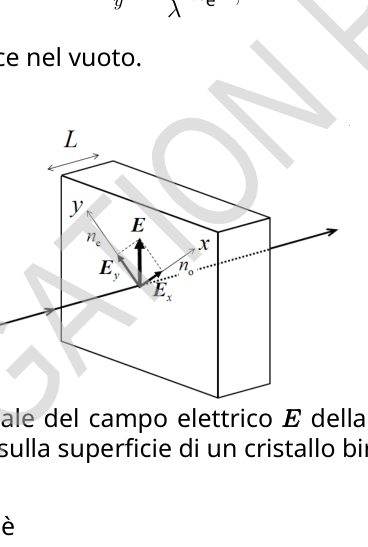
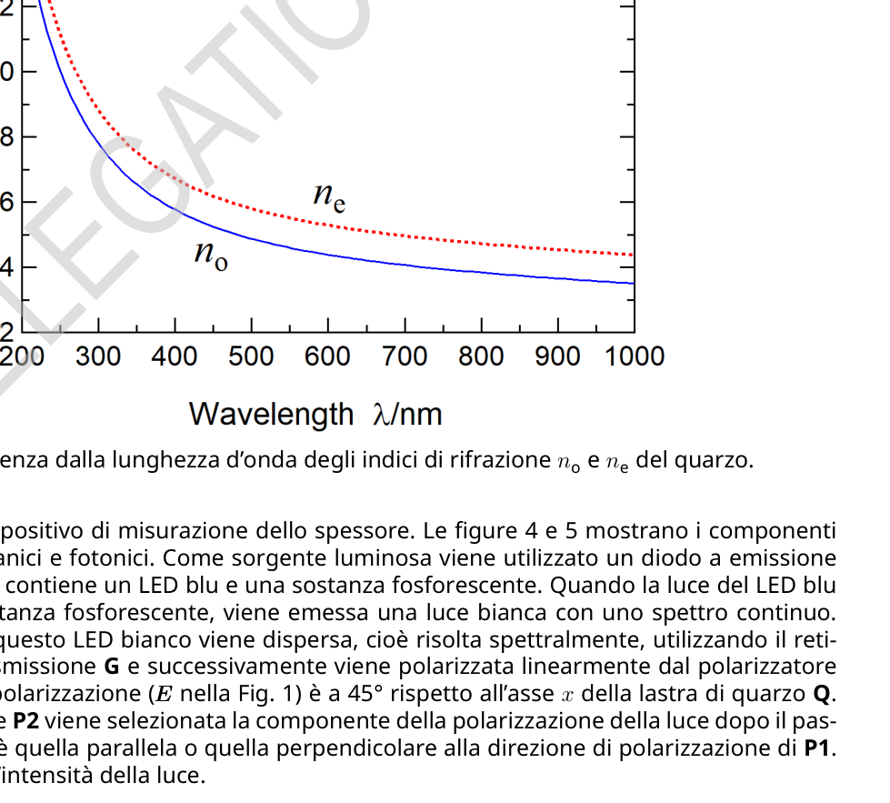
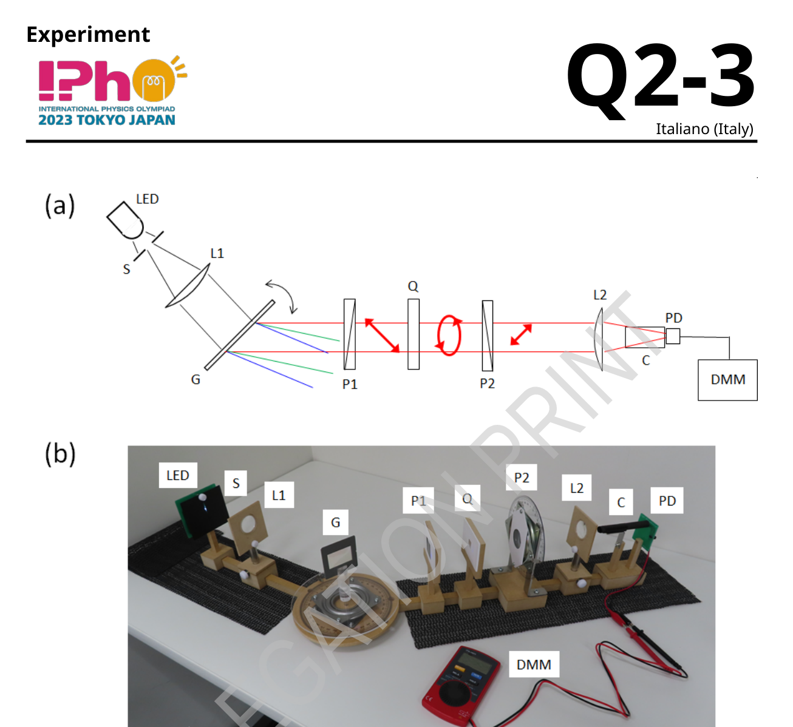
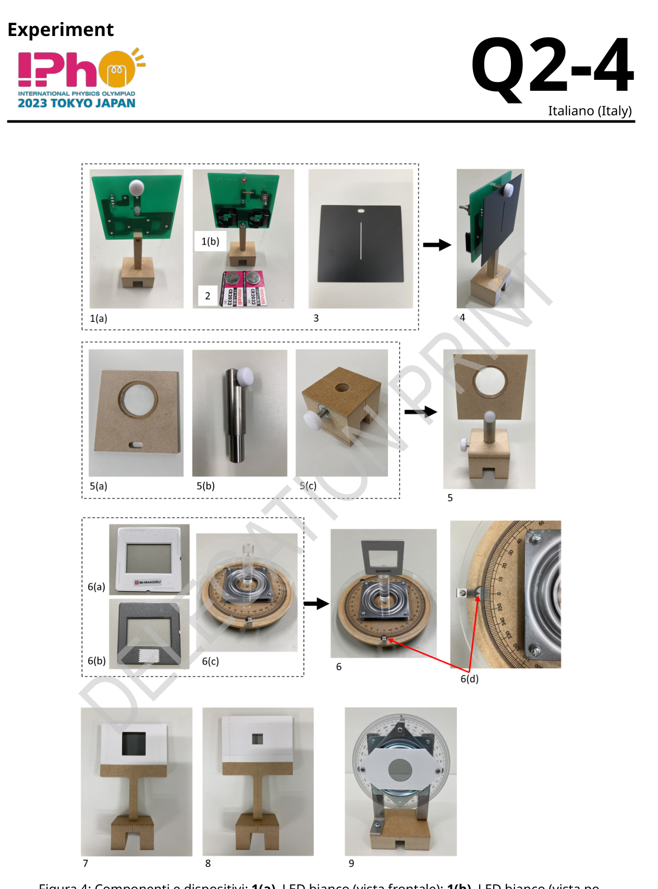
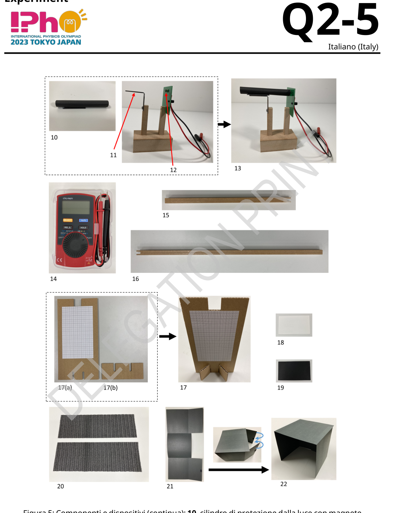
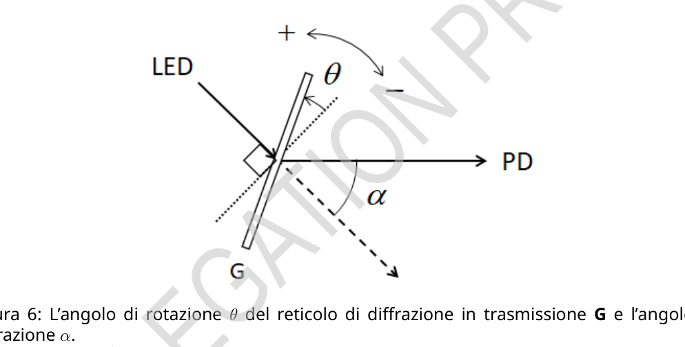

P1. La sua direzione di polarizzazione ( nella Fig. 1) è a rispetto all’asse della lastra di quarzo Q. Ruotando il polarizzatore P2 viene selezionata la componente della polarizzazione della luce dopo il passaggio attraverso Q, cioè quella parallela o quella perpendicolare alla direzione di polarizzazione di P1. Il fotorilevatore misura l’intensità della luce. Experiment Q2-3 Italiano (Italy) Figura 3: (a) Schema e (b) fotografia del dispositivo di misurazione dello spessore. LED: LED bianco, S: fenditura, L1: lente di collimazione, G: reticolo di diffrazione a trasmissione, P1: polarizzatore, Q: piastra di quarzo, P2: polarizzatore, L2: lente di messa a fuoco, C: cilindro di schermatura della luce, PD: fotorivelatore, DMM: multimetro digitale. Experiment Q2-4 Italiano (Italy) Figura 4: Componenti e dispositivi: 1(a). LED bianco (vista frontale); 1(b). LED bianco (vista posteriore); 2. batterie; 3. fenditura (S in Fig. 3); 4. LED con fenditura attaccata; 5. lente (L1, L2 in Fig. 3); 5(a) lente montata; 5(b) supporto della lente; 5(c) base del supporto; 6. reticolo di diffrazione a trasmissione (6(a) anteriore; 6(b) posteriore con nastro adesivo) su 6(c) piattaforma di rotazione (G in Fig. 3); 6(d) dispositivo di lettura dell’angolo sulla piattaforma di rotazione; 7. polarizzatore (P1 nella Fig. 3); 8. piastra di quarzo (Q nella Fig. 3); 9. polarizzatore sul supporto di rotazione (P2 nella Fig. 3). Experiment Q2-5 Italiano (Italy) Figura 5: Componenti e dispositivi (continua): 10. cilindro di protezione dalla luce con magnete (C in Fig. 3); 11. supporto del cilindro; 12. fotorilevatore (PD in Fig. 3); 13. fotorilevatore con cilindro; 14. multimetro digitale (DMM in Fig. 3); 15. guida corta; 16. guida lunga; 17. schermo con carta millimetrata; 18. cartoncino bianco; 19. cartoncino nero; 20. fogli antiscivolo; 21 & 22. scatola di protezione dalla luce (prima del montaggio e come è montata). Experiment Q2-6 Italiano (Italy) Parte A. Impostazione del sistema di misura (2.3 punti) La luce che esce dal LED è incidente sulla superficie del reticolo (Fig. 6). L’angolo di rotazione di G per l’incidenza normale è fissato a . Le rotazioni in senso antiorario e orario sono indicate rispettivamente con + e . L’angolo di diffrazione al primo ordine è definito come illustrato. Indicando con il passo della scanalatura (ossia la distanza tra le fenditure) di G, la lunghezza d’onda è data in termini di come
Di seguito utilizziamo e l’angolo di diffrazione viene fissato a . Figura 6: L’angolo di rotazione del reticolo di diffrazione in trasmissione G e l’angolo di diffrazione . A.1 Calcolare la lunghezza d’onda massima che può essere misurata e il relativo . 0.3 pt A.2 Calcolare il valore numerico di per nm. 0.2 pt Le procedure di impostazione del sistema di misura sono le seguenti. [1] Posizionare verticalmente lo schermo con carta millimetrata (17 nella Fig. 5) utilizzando il piedistallo (17(b)). [2] Posizionare due batterie sul modulo LED bianco. Le parti ”+” devono essere rivolte verso di voi. [3] Accendere il LED. [4] Rimuovere la vite sul lato anteriore del modulo LED. Fissare la fenditura al modulo LED con la vite (4 nella Fig. 4). Utilizzando lo schermo con carta millimetrata, regolare la posizione della fenditura in modo che il flusso di luce bianca trasmesso sia il più luminoso possibile e misurare l’altezza del centro del fascio all’uscita della fenditura (per la procedura [9]). [5] Fare in modo che l’estremità a forma di U con scanalatura aperta della guida lunga si appoggi a quella della guida corta (Fig. 7(i)). Inserire l’asse di rotazione che fuoriesce dalla faccia inferiore della piattaforma di rotazione nel ”foro passante virtuale” creato dalle guide (Fig. 7(ii)). Assicurare una rotazione libera e Experiment Q2-7 Italiano (Italy) regolare di entrambi i bracci attorno all’asse, come indicato nella Fig. 7(iii). Assicurarsi che la guida lunga rimanga sul tavolo . Figura 7: (i) L’ estremità della guida corta con scanalatura aperta a U sotto quella della guida lunga crea un foro passante ”virtuale”. (ii) Nel foro virtuale, inserire l’asse che fuoriesce dalla faccia inferiore della piattaforma di rotazione. (iii) Vista dall’alto della piattaforma di rotazione con le guide libere di ruotare attorno all’asse. 1. guida corta; 2. guida lunga; 3. piattaforma di rotazione; 4. asse della piattaforma rotazione. [6] Allineare la linea centrale della guida corta con sulla scala della piattaforma di rotazione e mantenerla in tale posizione. È possibile collocare un foglio antiscivolo sotto la guida corta. [7] Assemblare le lenti (5 in Fig. 4). [8] Posizionare il modulo LED bianco con la fenditura e la lente (L1 nella Fig. 3) sulla guida corta. Regolare la distanza tra la fenditura e L1 in modo che la dimensione del fascio di luce, dopo aver attraversato L1, rimanga pressoché costante, cioè collimata, lungo il percorso della luce. [9] Utilizzando lo schermo con carta millimetrata, misurare l’altezza del fascio dopo L1. Regolare il livello di L1 allentando la vite di fermo della base del montante e spostando il montante quanto necessario per mantenere l’altezza del fascio quasi uguale a quella subito dopo la fenditura. [10] Allineare la linea centrale della guida lunga con i della scala angolare sulla piattaforma di rotazione. [11] Modificare la posizione orizzontale del supporto dell’obiettivo (5(a) nella Fig. 4) allentando la vite di fermo e spostandolo a destra o a sinistra. Il centro del fascio dopo L1 dovrebbe allinearsi con la linea Experiment Q2-8 Italiano (Italy) centrale della guida lunga. È possibile posizionare lo schermo con carta millimetrata capovolto sulla guida lunga. [12] Attaccare la seconda superficie del nastro biadesivo sul lato posteriore del reticolo di diffrazione a trasmissione (6(b) nella Fig. 4) e fissarlo all’asse superiore della piattaforma di rotazione (6 nella Fig. 4). [13] Rivolgere il lato anteriore del reticolo verso la sorgente luminosa e ruotare la piattaforma in modo che la luce riflessa entri nella fenditura, cioè (incidenza normale). Annotare l’angolo della piattaforma di rotazione. Sarà utilizzato nella domanda B.1. [14] Spostare la guida lunga intorno all’asse in modo che (Fig. 6). Una volta fissata, è possibile posizionare successivamente un secondo foglio antiscivolo per evitare disallineamenti accidentali. [15] Posizionare la lente (L2 nella Fig. 3) e il fotorivelatore (PD nella Fig. 3) con il supporto cilindrico sulla guida lunga. Per focalizzare la luce diffratta su PD, regolare la distanza tra PD e L2 lungo la guida lunga e l’altezza di L2. L’ampiezza verticale del fascio viene così ridotta al minimo. Controllare l’ampiezza del fascio con il cartoncino bianco. Nel caso in cui sia troppo debole per essere riconosciuto a occhio nudo, utilizzare la scatola di schermatura per coprire PD. [16] Applicare il cilindro paraluce al supporto (13 nella Fig. 5). Lo schermo luminoso riduce al minimo la luce indesiderata da rilevare. [17] Collegare il PD al DMM. Il filo rosso (nero) va al terminale rosso (nero). Impostare il multimetro sulla modalità di misurazione della tensione continua (DC). [18] Regolare l’altezza di L2 per massimizzare le letture del DMM. Di seguito, l’intensità della luce è identificata con i valori di tensione sul DMM. A.3 Ruotare la piattaforma di rotazione e trovare l’angolo e la corrispondente lunghezza d’onda alla quale la densità spettrale di emissione del LED blu è massima, assumendo che . Se la risposta ottenuta è compresa tra 450 e 460 nm, l’apparato è correttamente allineato; scrivere sul foglio delle risposte e continuare. Altrimenti, si dovrà trovare il vero valore di . Senza cambiare nulla, compreso il valore originale di trovato, determinare un valore corretto per cui ricada nell’intervallo appropriato. Registrare qu
p.1 — Scomposizione vettoriale del campo elettrico

p.2 — Indice di rifrazione del quarzo vs lunghezza d’onda

p.3 — Schema e fotografia del dispositivo di misura

p.4 — Componenti e dispositivi del montaggio

p.5 — Componenti e dispositivi (continua)

p.6 — Geometria diffrazione LED reticolo fotorilevatore

Topic: Wave Optics, Geometric Optics Metodi: Interference & Diffraction Analysis, Snell’s Law, Experimental Data Analysis Competenze: Experimental Data Analysis, Mathematical Modeling, Measurement & Instrumentation Objects: Slit, Lens, Diffraction Grating, Screen Fonte: Testo (PDF) — p.2 Soluzione: Soluzioni (PDF)
P1. The direction of its polarization ( in Fig. 1) is with respect to the axis of the Q quartz plate. By rotating the polarizer P2, the component of the polarization of light after passing through Q, i.e. that parallel or perpendicular to the polarization direction of P1 is selected. The light elevator measures the intensity of light. Experiments Q2-3 Italian (Italy) Figure 3: (a) Schedule and (b) Photograph of the thickness measuring device. The following is the list of the categories of products: White, S: crack, L1: contact lens, G: transmission diffraction lattice, P1: polarizer, Q: quartz plate, P2: polarizer, L2: focusing lens, C: cylinder of The Commission has decided to adopt a decision on the conclusion of the Agreement on the European Economic Area. Experiments Q2-4 Italian (Italy) Figure 4: Components and devices: 1(a). White LED (frontal view); 1(b) White LED (rear view); 2. batteries; 3. The following table shows the results of the study: 3); 4. LED with attached slit; 5. Lenses (L1, L2 in
- What? 3); 5* (a) lens mounted; 5* (b) lens support; 5* (c) base of support; 6. Transmission diffraction lattice (6(a) front; 6(b) rear with adhesive tape) on 6(c) platform The following table shows the results of the calculations: 3); 6 (d) angle reading device on the rotating platform; 7. The polarizer (P1 in Fig. 3); 8. Quartz plate (Q in Fig. 3); 9. The vehicle shall be equipped with a brake pad. The rotation rate (P2 in Fig. 3). Experiments Q2-5 Italian (Italy) Figure 5: Components and devices (continuous): 10. a magnetic light protection cylinder (C to Fig. 3); 11. cylinder support; 12. The Commission has also adopted a number of proposals for the 3); 13. The following table shows the cylinder; 14. The number of units in the digital multimeter (DMM in Fig. 3); 15. short drive; 16. The length of the vehicle is 17. screen with millimeter paper; 18. white card; 19. the black card; 20. The following table shows the results of the analysis: Light protection box (before installation and how it is installed). Experiments Q2-6 Italian (Italy) Part A. The measuring system setting (2.3 points) The light coming out of the LED is incident on the surface of the lattice (Fig. 6). The rotation angle of G for The normal incidence is set to . The time-to-time and off-time rotations shall be indicated respectively with + and . The angle of diffraction in the first order is defined as shown. Indicating the step with of the drainage (i.e. the distance between the cracks) of G, the wavelength is given in terms of as
The following is used and the diffraction angle is set to . Figure 6: The rotation angle of the transmission diffraction lattice G and the angle of diffrazione . A.1 Calculate the maximum wavelength that can be measured and the relative . 0.3 pt A.2 Calculate the numerical value of for nm. 0.2 pt The procedures for setting up the measuring system are as follows. [1] Position the screen vertically with millimeter paper (17 in Fig. 5) using the pedestal (17(b)). [2] Place two batteries on the white LED module. The parts + must be directed at you. [3] Turn on the LED. [4] Remove the screw on the front of the LED module. Fix the crack to the LED module with the screw (4 in Fig. 4). Using the millimeter paper screen, adjust the position of the crack so that The white light transmitted shall be as bright as possible and the height of the centre of the beam shall be measured. the clearance of the cleft (for the procedure [9]). [5] Make the U-shaped end with open drainage of the long drive leaning against the The short-range driving (Fig. 7(i)). Insert the rotating axis that exits the lower side of the platform The rotation of the virtual passing beam created by the guides (Fig. 7(ii)). Ensure free movement and Experiments Q2-7 Italian (Italy) adjust both arms around the axis, as shown in Fig. 7 (iii) Make sure the long drive remain on the table . Figure 7: (i) The end of the short drive with the opening channel at U below the drive The long-term effect is to create a virtual through hole. (ii) In the virtual forum, insert the axis that leaves the the lower face of the rotating platform. (iii) Viewed from the top of the rotating platform With the guides free to rotate around the axis. 1. short drive; 2. long-distance driving; 3. the platform of rotation; 4. the axis of the rotating platform. [6] Align the centre of the short drive with on the rotating platform scale and keep it in that position. It is possible to place a slip sheet under the short guide. [7] Assembling the lenses (5 in Fig. 4). [8] Position the white LED module with the split and lens (L1 in Fig. 3) on short driving. The rules the distance between the cleft and L1 so that the beam size, after crossing L1, It remains almost constant, that is, colliding, along the path of light. [9] Using the millimeter paper screen, measure the beam height after L1. Adjusting the level L1 by loosening the stop-crank of the base of the lift and moving the lift as necessary to The height of the beam should be kept almost the same as the one immediately after the split. [10] Align the centre line of the long drive with the of the angle scale on the platform of the The rotation. [11] Change the horizontal position of the support for the target (5(a) in Fig. 4) easing the lives of I’m going to stop and move it to the right or to the left. The center of the beam after L1 should align with the line Experiments Q2-8 Italian (Italy) The central part of the long drive. You can place the screen with the millimeter paper backwards on the It’s a long drive. [12] Attach the second surface of the biadhesive tape to the rear of the diffraction lattice to The Commission has also adopted a proposal for a regulation on the protection of the environment. 4) and attach it to the upper axis of the rotating platform (6 in Fig. 4). [13] Turn the front of the lattice towards the light source and rotate the platform so that The reflected light enters the cleft, i.e. (normal incidence). Note the angle of the The rotating platform. It will be used in application B.1. [14] Move the long wheel around the axle so that (Fig. 6). Once fixed, it is possible to a second anti-slip sheet shall be placed afterwards to avoid accidental misalignment. [15] Position the lens (L2 in Fig. The photoreflector (PD in Fig. 3) is used to measure the light output of the device. 3) with the cylindrical support on the It’s a long drive. To focus diffracted light on PD, adjust the distance between PD and L2 along the long drive and the height of L2. The vertical width of the beam is thus reduced to a minimum. Check the width of the I’ll put it on the white card. In case it’s too weak to be recognized with the naked eye, Use the shield box to cover PD. The cylinder is a small cylinder with a diameter of about 10 mm. 5). The light screen shall minimise the unwanted light to detect. [17] Link the PD to the DMM. The red (black) wire goes to the red (black) terminal. Set the multimeter to The measurement method for continuous voltage (DC). [18] Adjust the L2 height to maximize DMM readings. The intensity of light is identified with the voltage values on the DMM. A.3 Rotate the rotating platform and find the angle and the corresponding wavelength at which the spectral emission density of the blue LED is maximum, assuming that . If the resulting response is between 450 and 460 nm, the apparatus is properly aligned; write on the sheet of the I’ll answer and go on. Otherwise, the true value of must be found. Without changing anything, including the original value of found, determine a value corrected so that falls within the appropriate range. Record this
p.1 — Scomposizione vettoriale del campo elettrico
p.2 — Indice di rifrazione del quarzo vs lunghezza d’onda
p.3 Scheme and photograph of the measuring device
**p.4 ** Assembly components and devices
p.5 — Componenti e dispositivi (continua)
p.6 — Geometria diffrazione LED reticolo fotorilevatore
Topic: Wave Optics, Geometric Optics Metodi: Interference & Diffraction Analysis, Snell’s Law, Experimental Data Analysis Competenze: Experimental Data Analysis, Mathematical Modeling, Measurement & Instrumentation Objects: Slit, Lens, Diffraction Grating, Screen Fonte: Testo (PDF) — p.2 Soluzione: Soluzioni (PDF)